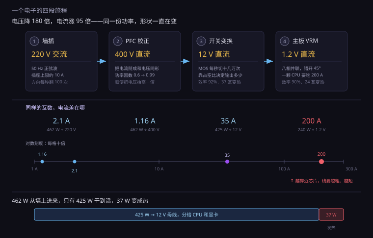
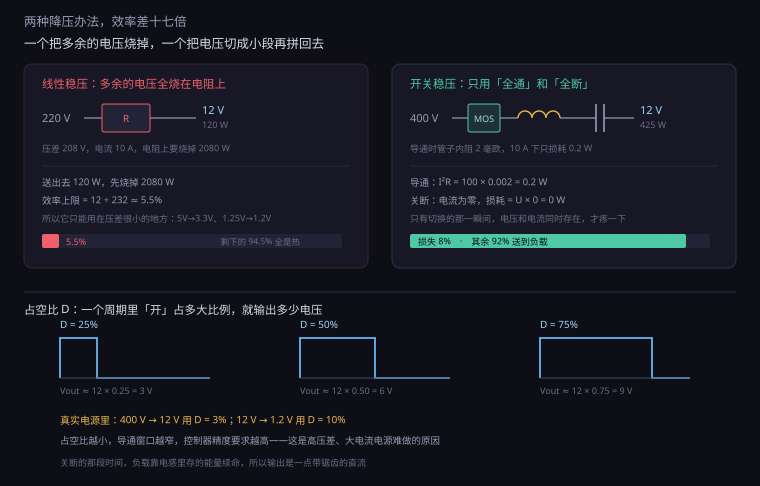
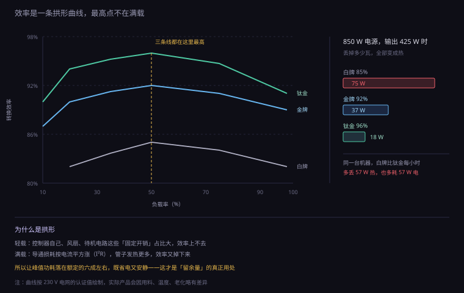
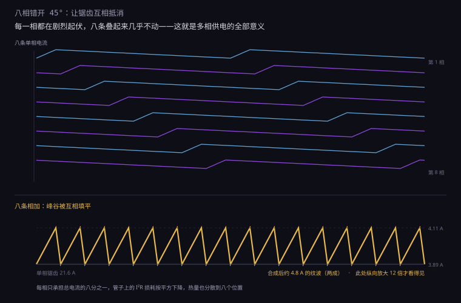
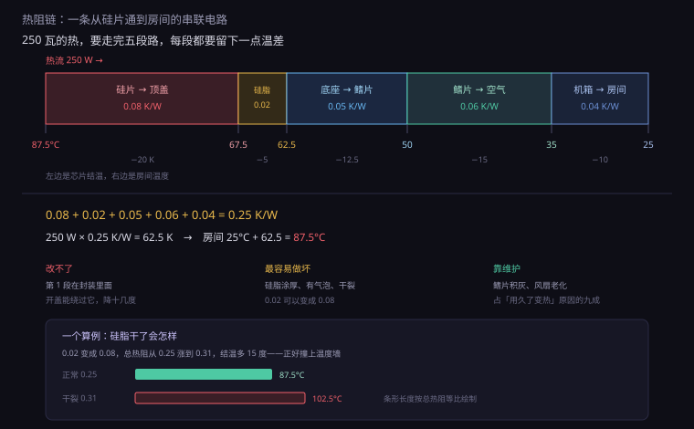
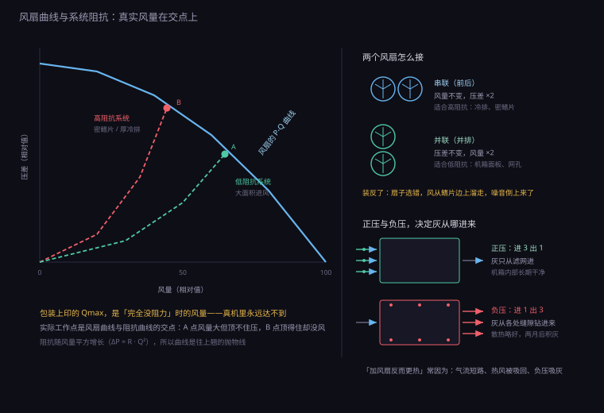

约 1.1 万字 · 6 张图 · 读完你能说清一度电从墙里到芯片要经过几道转换、 为什么开关电源比线性稳压省一半的电、为什么加风扇有时反而更热
先跟着一个电子走一趟。它住在小区变压器里，被推上家里的电线， 从墙上的插座钻进电脑，最后要落在一颗 CPU 的晶体管里，干完活再回来。 这一路上，它换了三次身份、走过四站。
第一段：墙插。插座里是 220 伏、50 赫兹的交流电——方向每秒翻 100 次。 电脑要的是直流电，所以第一件事是把它掰直。但电脑不能直接整流。 直接整流会带来一个副作用：电流只在电压最高的那一小段时间里猛冲一下， 波形是一串尖尖的脉冲，不是平滑的正弦。这种电流对电网很不友好， 会在电线上产生额外的损耗，也会让同一路电上的设备受干扰。
所以电源里第一级是一个叫 PFC（功率因数校正）的电路。 它的工作方式是：盯着输入电压的波形，让输入电流也照着同样的形状走。 电压高的时候多要点，电压低的时候少要点，两个波形贴合了， 功率因数就从 0.6 提到 0.99。（0.6 的意思是：电网送进来 1000 瓦的「账面功率」， 只有 600 瓦真正做功，剩下 400 瓦在电线和电网之间来回倒腾。）
经过 PFC，交流变成了 400 伏左右的直流——注意，不是 220 伏。 PFC 顺手把电压也抬高了，这个高电压后面有用。
第二段：400 伏变 12 伏。这一段是整个电源的心脏， 叫「开关变换」。它做的事很粗暴：把 400 伏直流切成每秒十几万次的开和关， 通过一个高频变压器把能量传过去，再整流平滑成 12 伏。 为什么要切成高频、为什么要变压器，第 2 小节专门讲，这里先记结论： 不切开，就没法变电压；切得够快，变压器才能做得够小。
第三段：12 伏穿过主板。电源输出的 12 伏从一根粗线送进主板， 在主板上一路走，分给显卡插槽、内存插槽、硬盘接口， 以及 CPU 旁边那一圈黑方块——VRM。这一段路上损耗不大，但电流很大： 一台 600 瓦的机器，12 伏这条线上要跑 50 安培。 50 安培是什么概念？家用电饭锅的工作电流大约 3 安培， 空调 5 安培。电脑里这根细线，扛着十个空调的电流。
第四段：12 伏变 1.2 伏。最后一步在 CPU 旁边的 VRM 里完成。 这里降压幅度最大——从 12 伏压到 1.2 伏，只剩十分之一。 但因为电压低，要送出同样的功率，电流就得大十倍： 一颗吃 240 瓦的 CPU，在 1.2 伏下要 200 安培。 两百安培，比一台家用焊机还猛。
把这条链上的数字排在一起，会看到一个很反直觉的事实： 越靠近芯片，电压越低、电流越大、导线越短。 这不是设计的偏好，是物理逼出来的——第 6 小节会算清楚为什么。

没有一次转换是白干的。PFC 要丢一点，开关变换要丢一点，主板走线要丢一点，VRM 要丢一点。 这些「一点」加起来，就是电源铭牌上那个效率数字的反面。
举个具体的：一台标称 850 瓦、80 PLUS 金牌的电源，在 50% 负载（425 瓦输出）时效率 92%。 这意味着墙上要送进来 425 ÷ 0.92 ≈ 462 瓦，中间 37 瓦消失了。 它没有真的消失，它变成了电源壳子里的热。 那 37 瓦的热，要靠电源自己那个 12 厘米风扇吹出去。
所以一个反常识的结论：电源也是电脑里的一个发热零件。 它不参与计算，但它贡献热量。一台 600 瓦的机器， 电源可能要往机箱里吐 40 到 60 瓦的废热——相当于又塞了个白炽灯泡进去。
要把 220 伏变成 12 伏，最直觉的办法是「串一个电阻分压」。 这个办法在理论上成立，在实践上是灾难。算一下就明白。
假设负载要 12 伏、10 安培，也就是 120 瓦。 用电阻分压，电阻上要承担 220 − 12 = 208 伏。 因为串联电流相同，电阻上消耗的功率是 208 × 10 = 2080 瓦。 为了送出 120 瓦，要先烧掉 2080 瓦。 效率 5.5%，那根电阻会当场烧红。
这类方案叫线性稳压，它的效率上限就是 Vout ÷ Vin。 12 ÷ 220 ≈ 5%。所以它只能用在压差很小的地方—— 比如把 5 伏降到 3.3 伏（效率 66%），或者把 1.25 伏降到 1.2 伏（效率 96%）。 压差一大，它就是个电炉子。
开关电源换了个思路。它不用电阻去「消耗」多余的电压， 而是用一个开关（MOS 管）飞快地开合，让能量一点一点地「搬」过去。 关键在于：开关只有两个状态，而这两个状态都不怎么费电。
导通时，MOS 管的内阻只有几毫欧。10 安培流过 2 毫欧，损耗是 I²R = 100 × 0.002 = 0.2 瓦。关断时，电流为零， 不管两端电压多高，损耗都是零（P = UI = U × 0 = 0）。 只有「正在切换」的那一瞬间，管子上同时有电压又有电流，才会疼一下。 这个瞬间叫开关损耗，跟开关频率成正比。
于是核心矛盾出现了：切得越快，变压器和电感可以越小；但切得越快，开关损耗越大。 这是一场拉锯。早期电源切在 20 千赫，人耳能听到变压器的啸叫； 现在的电源切在 100 千赫到 1 兆赫，体积缩到巴掌大，代价是要用更好的管子。
顺便解释了一个老现象：有些电源在低负载时会「吱吱」响。 那是开关频率掉进了人耳范围（20 到 20000 赫兹）。轻载时控制器会降低频率来减少开关损耗， 结果正好落进能听见的区间，线圈和陶瓷电容跟着振，就出声了。 这叫「线圈啸叫」，不是坏了。

开关电源输出电压的高低，由一个数决定：占空比， 也就是一个周期里「开」占的比例。
最基本的形式（降压型，Buck）里，输出约等于输入乘占空比。 电源要把 400 伏降到 12 伏，占空比就是 12 ÷ 400 = 3%。 主板 VRM 要把 12 伏降到 1.2 伏，占空比是 10%。 所以 VRM 里的开关，绝大部分时间是关着的。
3% 这个数很极端。一个 100 千赫的开关，周期 10 微秒，只有 0.3 微秒是导通的。 这么短的导通时间，对控制芯片的精度要求很高——差 0.03 微秒，输出就偏 1 伏。 这也是为什么高压差、大电流的电源难做：占空比太小，控制窗口太窄。
那关着的那 97% 时间，负载吃什么？吃电感。 导通时电感把能量存进磁场（电流线性上升），关断时电感把能量放出来（电流线性下降）。 输出的电流因此是连续的、带一点锯齿的。这个锯齿叫纹波， 后面第 7 小节还要回来说它——纹波是 VRM 设计里最要命的一个指标。
打开一个电源，会看到风扇不在正中间，而是斜着——这不是随便摆的。 电源内部的元件是「一头高一头矮」：高压侧有大电容和变压器，低压侧是密集的输出滤波。 斜着吹，才能让风扫过整个盒子。
更麻烦的是，电源里的风向被元件挡得七零八落：变压器是一块砖，电容是一排柱子， 散热片是一片片竖着的铝。风穿过这些东西，等于穿过一片杂乱的树林。 阻抗高，就得用高静压的风扇；而高静压扇天生比同尺寸的风量扇吵。
再加上一个限制：电源风扇只能从机箱底部（或后部）吸气。 如果机箱底部没有留出空间、或者垫在地毯上，进风被憋住，风扇就会一直高转。 很多人抱怨「电源吵」，其实是因为它喘不上气。 把机箱垫高两三厘米，声音就下来了——这是最便宜的一次改造。
电源包装上印着「80 PLUS 金牌」。这个「80」不是效率 80%， 而是指一个门槛：在 20%、50%、100% 三个负载点上，效率都在 80% 以上。 这是 2004 年定下的最低标准，之后按超出多少分成白、铜、银、金、铂、钛六级。
| 等级 | 10% 负载 | 20% | 50% | 100% | 通俗说法 |
|---|---|---|---|---|---|
| 白牌 | — | 82% | 85% | 82% | 能用，多见于整机 |
| 铜牌 | — | 85% | 88% | 85% | 入门自装 |
| 银牌 | — | 87% | 90% | 87% | 少见的中间档 |
| 金牌 | — | 90% | 92% | 89% | 主流推荐 |
| 白金牌 | — | 92% | 94% | 91% | 高端 |
| 钛金牌 | 90% | 94% | 96% | 91% | 接近理论极限 |
表为 230V 电网下的要求（国标环境）；115V 电网（美国、日本）数字整体低 2 到 3 个百分点。
看清楚这张表的结构，会发现两件事。
第一，效率曲线是拱形，最高点在 50% 负载。 这是开关电源的普遍特征：轻载时，控制器自身、风扇、待机电路这些「固定开销」占比大， 效率低；满载时，导通损耗（I²R）随电流平方涨，效率也掉。 中间的 40% 到 60% 是最舒服的区间。 所以「电源买大一点，让它工作在中间」这个老经验是真的有物理依据的。
第二，100% 负载时的效率反而比 50% 低。 金牌在满载只有 89%。这意味着，一台实际功耗贴着电源额定值的机器， 正好工作在效率最差的位置之一。真要省电，应该让峰值功耗落在额定的六成左右。
算笔账，别被营销带走。假设一台机器每天满载 4 小时、其余时间待机， 满载功耗 400 瓦，待机 3 瓦。
一年用电：400 × 4 × 365 = 584 度，加上待机 3 × 20 × 365 = 22 度，共约 606 度。 按 0.55 元一度，电费约 333 元。
金牌（92%）换成白牌（85%），输入侧多耗 8.2%。 满载那一部分多花：584 × 8.2% ≈ 48 度，约 26 元。 一年二十六块。
所以如果只看电费，金牌和白牌的差价要好几年才回本。 买金牌真正的理由不是省钱，是别的东西： 同样的输出，发热少 8 瓦，风扇转速低一点，噪音小一点，电容温度低一点，寿命长一点。 再加上金牌通常意味着更好的用料、更严的纹波控制、更全的保护电路。 这才是钱的去处。

老经验说「电源功率要留 1.5 倍余量」。这个说法在今天需要修正， 因为真正的敌人不是「平均功率」，是瞬态。
现代显卡有一个坏毛病：一帧画面里，GPU 的负载可能在几微秒内从 30% 跳到 100%。 这一瞬间的电流尖峰，可以达到平均功耗的两倍。有实测显示， 一张标称 450 瓦的卡，能在 1 毫秒内抽走 700 到 900 瓦。 而功耗仪上你完全看不到它，因为仪表的采样率根本跟不上。
这种尖峰对电源是酷刑。电源的反馈环路有响应时间（几十微秒到几毫秒）， 来不及调整。它只能靠输出电容里存的那点电撑着。 电容撑不住，12 伏就往下掉；掉到一定程度，主板判定电压异常，直接断电重启。 这就是「跑游戏随机重启」最常见的原因之一—— 不是电源功率不够，是它扛不住那 1 毫秒。
所以 2022 年之后的 ATX 3.0 规范加了一条硬指标： 电源必须能承受 200% 额定功率持续 100 微秒、180% 持续 1 毫秒、150% 持续 10 毫秒， 而且输出电压不能跌出规范范围。这条规定就是冲着显卡尖峰去的。 买新电源认 ATX 3.0 / 3.1，真正的意义在这，不在那个新接口。
| 整机峰值功耗 | 建议额定 | 说明 |
|---|---|---|
| 300 W 以内 | 450 W | 核显办公机，余量充足，效率也在好区间 |
| 400 W | 550 – 650 W | 主流游戏机，留 1.5 倍应对尖峰 |
| 600 W | 850 W | 高端显卡，优先 ATX 3.0 |
| 800 W | 1000 – 1200 W | 旗舰卡，注意 12V 单路输出能力 |
还有一个常被忽略的点：电源的效率会随温度下降。 铭牌上的 92% 是在 25°C 环境下测的。塞在机箱底部、进风被挡、 内部温度 45°C 的时候，效率可能掉到 89%，能输出的持续功率也要打折。 有些电源标「50°C 下满功率输出」，有些只标「25°C」， 这个差别在夏天会显现出来。
打开一个电源壳子，除了主变换电路，还有几样东西，每一样都对应一个你可能遇到过的现象。
一、大电容与保持时间。PFC 后面有一个（或两个）四百多伏的电解电容， 容量几百微法。它的作用是储能——市电突然断一下（比如空调启动、灯闪一下）， 这个电容能让电脑撑过短暂的空档。
ATX 规范要求满载时保持时间不少于 17 毫秒。 这个数字不是随便定的：50 赫兹的电，一个周期 20 毫秒。 也就是说，至少要能扛过一个完整的电网周期，才能熬过大部分瞬时波动。 算一下就知道这个要求有多硬：850 瓦输出、17 毫秒，需要 14.5 焦耳的储能。 电容从 400 伏放到 300 伏，靠 ½C(V₁²−V₂²) 提供， 解得 C ≈ 414 微法。这就是那个大电容为什么长那么胖。
二、待机电源（5V SB）。电脑关机后，主板上的电源灯还亮着、 USB 还能给手机充电、按键盘能唤醒——靠的是电源里一个独立的小电路， 一直在输出 5 伏、最大 2 到 3 安培。 它是整机唯一 7×24 小时工作的部分，待机功耗要求低于 0.5 瓦（ErP Lot 6）。 所以「关机还发热」不是错觉，那个小电路确实在跑。
三、保护电路。OVP（过压）、OCP（过流）、OPP（过功率）、 OTP（过温）、SCP（短路）。这些东西平时看不见，出事时救命。 便宜电源省掉的就是它们——省掉一个 OCP，短路时管子炸了，可能连带烧主板。 买电源看保护清单，比看效率等级更实在。
四、单路 12V 与多路 12V。早期规范把 12V 分成几路，每路限流 20 安培左右， 防止一根线短路时烧起来。但这给大功率显卡添了麻烦——一张卡可能要从两路取电。 现在的做法多是「单路 12V」，即所有 12V 并联，总额定 60 安培， 靠线材和接口自身的规格来保证安全。 单路更灵活，但要求线材和端子质量足够好。
五、风扇控制。很多电源在低负载时风扇完全停转（半被动模式）， 靠自然对流散热。这带来一个副作用：低负载下电源内部温度偏高， 电容老化快一点。所以「风扇不转」不等于「更好」，得看厂家的温度设计和电容等级。
现在到最后一站。CPU 插槽旁边那一圈黑方块和小圆柱，就是 VRM （Voltage Regulator Module，电压调节模块）。它做的事和第 2 小节的开关变换一模一样， 只是要求高得多。
要求有多高？三项：
第一条决定了物理布局。200 安培的电流，不能用「导线」送，只能用「铜片」送。 这就是为什么 CPU 插槽旁边有那么多层铜、为什么供电区要贴着插槽放。 同样是 200 安培，走 1 厘米和走 5 厘米，损耗差 25 倍（I²R 里 R 和长度成正比）。
算一下这个损耗有多可怕。假设 PCB 上那一段铜的电阻是 0.2 毫欧 （这已经是十几层铜并联的结果），200 安培流过： I²R = 40000 × 0.0002 = 8 瓦。 这 8 瓦就烧在主板那一小块地方，什么也不干。要是电阻做到 0.5 毫欧， 就是 20 瓦——足以把 PCB 烤变色。
第二条决定了控制方式。VRM 的反馈环路必须快，快到能在几微秒内把电流顶上去。 这时候电感就成了瓶颈——电感天生「抗拒电流变化」，这是它的本职工作， 但在瞬态面前就成了拖累。所以高端 VRM 会用很小的电感值（几百纳亨）， 让电流能快速变化，代价是纹波变大，需要更多相来摊平。
第三条决定了必须多相。这就是下一小节的主题：为什么一相不够。
上一小节留下一个问题：为什么一相不够。答案藏在一个除法里。
Buck 电路的输出纹波，来自电感的电流锯齿。锯齿的幅度是 ΔI = (Vin − Vout) × 占空比 ÷ (频率 × 电感量)。 把 VRM 的数代进去：输入 12 伏、输出 1.2 伏、占空比 10%、 频率 500 千赫、电感 100 纳亨。
ΔI = (12 − 1.2) × 0.1 ÷ (500000 × 0.0000001) = 1.08 ÷ 0.05 = 21.6 安培。
也就是说，一条本应平稳的 60 安培电流，实际在 38 到 82 安培之间来回摇摆。 这个锯齿会直接变成输出电压的波动，芯片受不了。 想压小它，只有三条路：加大电感（响应变慢）、提高频率（开关损耗涨）、 或者——多放几相，让它们错开时间。
八相供电的意思是：八个一模一样的 Buck 电路，并联输出， 但它们的开关时刻彼此错开。八相，就错开八分之一周期，也就是 45 度。
关键在于：电感电流不能突变，但总电流是八路相加。 第一相在爬升的时候，第五相正在下降，第三相刚好在顶点。 八条锯齿叠在一起，峰和谷互相填平，总电流的波动只剩两成左右—— 21.6 安培变成 4.8 安培。
这就是多相供电的全部秘密：它不是在「增加功率」，它是在「摊平波动」。 顺便还带来两个好处：每一相只承担总电流的八分之一，管子上的 I²R 损耗按平方下降； 热量分散在八个位置，而不是集中在一个点。

主板广告上常写「16 相数字供电」，听起来比「8 相」高级。这个比较在多数情况下没有意义， 因为一「相」的含金量差别很大。
一相的承载能力，取决于它用的功率器件。低端的用分离的上下管加驱动芯片， 一相撑 25 到 30 安培；高端的用 DrMOS（把上下管和驱动封装在一起）， 一相能撑 60 到 90 安培，而且寄生电感小、开关更快。
所以 4 相 × 90 安培 = 360 安培，比 16 相 × 25 安培 = 400 安培差不了多少， 但元件数少一半、故障点少一半、布局更紧凑。 反过来，有些「16 相」里其实有 8 相是给核显或内存控制器供电的， 真正给 CPU 核心的只有 8 相。看相数不如看两件事：用的是什么器件、有没有独立的散热片。
| 看什么 | 意味着 | 怎么判断 |
|---|---|---|
| 器件类型 | 单相能扛多少电流 | DrMOS / SPS 优于「上下管 + 驱动器」分离方案 |
| 相数 | 纹波摊平的程度 | 核心相数 ≥ 8 对高端 CPU 更稳，但要看单相能力 |
| 散热片 | 能不能持续输出 | VRM 区有厚实的铝块或热管连接，才敢长时间满载 |
| 电容 | 瞬态响应与寿命 | 固态电容（固态聚合物）优于电解，耐温更高 |
最后说一个容易被忽略的细节：VRM 自己也要吃电。 八相各 3 瓦左右，合计 24 瓦，全部变成热，堆在插槽左边那一小块地方。 这就是为什么主板供电区摸上去烫手，也是为什么这一块必须有散热片—— 它不是在给 CPU 散热，它是在给自己散热。
电讲完了，讲热。热和电有一处惊人的相似： 它们都能用「欧姆定律」的形式来描述。
电压差推动电流，温差推动热流；电阻阻碍电流，热阻阻碍热流。 公式长得一模一样：温差 = 热功率 × 热阻，就像 电压 = 电流 × 电阻。 单位是 K/W（每瓦多少开尔文）。0.2 K/W 的意思是：每流过 1 瓦，温差 0.2 度。
有了这个工具，散热问题就变成了一道串联电路题。 热量从芯片的硅片出发，要穿过五段路才能到房间：
| 段 | 路径 | 典型热阻 | 说明 |
|---|---|---|---|
| 1 | 硅片 → 顶盖 | 0.08 K/W | 靠焊料或导热硅脂，是芯片内部的事，用户改不了 |
| 2 | 顶盖 → 散热器底座 | 0.02 K/W | 硅脂/液金这一层，薄薄一片，却是最容易做坏的一层 |
| 3 | 底座 → 鳍片 | 0.05 K/W | 铜底、热管、均热板，把热量从一点摊到一片 |
| 4 | 鳍片 → 机箱空气 | 0.06 K/W | 靠风扇吹，这一段的难度随鳍片密度上升 |
| 5 | 机箱空气 → 房间 | 0.04 K/W | 靠机箱风扇，经常被忽略，但它是最后一公里 |
五段相加，约 0.25 K/W。一颗满载 250 瓦的 CPU： 温差 = 250 × 0.25 = 62.5 K。房间 25 度，芯片结温就是 25 + 62.5 ≈ 88 度。而机箱内空气正好比房间高 10 度 （0.04 × 250 = 10），这个数和实测的「机箱内比室温高 8 到 12 度」对得上。
这个结果很说明问题：它离温度墙（100 到 105 度）只剩十几度，而这是全新散热器、 干净鳍片、25 度室温的理想状态。 夏天室温 35 度，加上一年多没清灰，那十几度就没了——这就是为什么同一台机器 冬天跑得好好的，七月开始降频。 厂商就是按这个边界设计散热器的：多给一分余量就要多花一分钱、多占一分空间。
既然是一条串联链，总热阻由最大那一段决定，而且改小别段的效果有限。 这是串联电路的基本性质：五段各 0.05，你只把其中一段降到 0.01， 总阻从 0.25 降到 0.21，只改善 16%。
但实际上这几段的「可改程度」差别极大：
第 2 段那 0.02 K/W 看着不起眼，但它对厚度极其敏感。 热阻的公式是 R = 厚度 ÷ (导热系数 × 面积)。 厚度在分母的上面——厚度翻倍，热阻就翻倍。
拿真实数字算。导热系数按常见的 8 W/(m·K)（这是个中等水平的值，好的能到 12 以上）， 接触面积按 600 平方毫米（一颗中端 CPU 的顶盖面积）。
涂 0.05 毫米：R = 0.00005 ÷ (8 × 0.0006) = 0.010 K/W。
涂 0.10 毫米：R = 0.020 K/W。
涂 0.30 毫米：R = 0.062 K/W。
在 250 瓦的负载下，这三者对应的温差是 2.6 度、5 度、15.6 度。 同一支硅脂，涂厚了三倍，温度差十三度。 这就是为什么「换硅脂」有时候能降十几度——不是因为新硅脂更好，是因为旧的干了、硬了、裂了， 热阻从 0.02 变成了 0.1。
但也别走极端。「越薄越好」有个下限：金属表面在微观上都是粗糙的， 有一层看不见的凹凸。硅脂的作用不是「导热」（它导热比铜差几十倍）， 而是把那些凹凸里的空气赶走。 空气的导热系数是 0.026，比硅脂差三百倍——一层看不见的空气，比一层厚厚的硅脂还坏。
所以正确做法是：薄而全覆盖，不留气泡。 涂法上，一个中心点压下去（靠压力摊开）通常比手动抹平更不容易裹气泡。 硅脂不是越多越好，多出来的那部分只是被挤到边上，不参与导热。

上面第 4、5 段都是「靠风扇吹」。但风扇不是越大越好，风也不是越多越好。 这里有一套很朴素的工程学，能解释很多装机时遇到的怪现象。
任何一个风扇，都有两个极端状态：
完全不受阻（自由吹）时，它送出的风量最大，叫 Qmax， 但它产生的压差是零——因为没有东西挡着。 完全堵死时，它顶住的压差最大，叫 Pmax， 但风量是零——因为吹不出去。
这两点之间连一条曲线，就是风扇的 P-Q 曲线。 中间那段是它真正工作的区域：一边有风量，一边有压差。 曲线一般是往下弯的——要吹得多，就顶不住压力；要顶得住压力，就吹不多。
机箱和散热器也有自己的曲线，叫系统阻抗曲线： 阻力随风量的平方增长（ΔP = R × Q²）。风量翻倍，需要的压差是四倍。
把两条曲线画在同一张图上，交点就是实际工作点。 这个点才是你机箱里真实的风量，不是包装上印的那个数。 包装上的 Qmax 是「没有任何阻力时」的数字，在真机箱里永远达不到。

两个风扇前后串起来（一个吹一个吸），风量不变，压差翻倍。 这适合高阻抗的场合：厚冷排、密鳍片、长风道。 水冷排就是典型——风要挤过密密麻麻的鳍片，静压不够就白搭。
两个风扇并排（都在往机箱里吹），压差不加，风量翻倍。 这适合低阻抗的场合：机箱进风口、大面积开口。
装反了的后果很具体：在低阻抗的机箱前面板上装一堆高静压扇，风量上不去， 噪音倒是上去了；在高阻抗的冷排上装一堆高风量扇，风全从鳍片边上溜走，冷排不热才怪。
这是装机时最让人崩溃的一种情况：明明多了两个风扇，温度却更高了。原因通常有三个。
一、气流短路。新加的风扇如果位置不对，会让风从「进风口直奔出风口」， 根本不经过 CPU 散热器和显卡。风量数字很好看，实际参与换热的空气没变多。 打开侧板看烟（或者用一根香），能看到气流路线——很多机箱的问题一眼就看出来。
二、把热风搅回来。出风口离进风口太近，或者出风被墙挡住， 排出去的热风又被吸回来。机箱内部温度反而升高。
三、负压太强，从缝隙吸灰。出风远大于进风时，机箱内是负压， 空气只能从各种缝隙（PCIe 挡板、光驱位、侧板缝）钻进来。 这些地方没有滤网，进来的全是灰。灰糊在鳍片上，两个月后温度就回来了。
灰是散热系统里最被低估的敌人。它的危害不是「脏」，是它占掉了鳍片的表面积，还堵住了风的通道。
鳍片之间的间隙通常 1.5 到 2 毫米。积一层 0.3 毫米的灰，通道就窄了两成， 阻抗按平方关系上升——风量可能掉三成。同时灰本身是极好的隔热材料 （主要成分是纤维和矿物粉尘，导热系数 0.04 左右，和泡沫塑料一个量级）。 等于给散热器盖了一床被子，还把被子里的风道堵了一半。
实测量级：一台用了两年没清灰的机器，满载温度比新机高 8 到 15 度是常有的事。 清完灰能掉回一半。这不是玄学，是那两个数字叠加的结果。
台式机的散热靠「大空间 + 大风量」，笔记本两样都没有。它只有两条路： 把热导到外壳上，或者用很小的风扇硬吹。
大多数轻薄本两样都用：CPU 的热通过热管送到鳍片，小涡轮扇吹出去； 同时整块底壳（常常是铝合金）充当一块大均热板，靠自然对流散掉一部分。 所以「笔记本放腿上很烫」不是设计缺陷，那就是它的散热器在工作。
这也解释了几件事：为什么床上用笔记本容易过热（进风口被被子堵死）、 为什么垫高两厘米能降五度（底部进风面积翻倍）、 为什么「抽风式散热器」有用但伤风扇（它强行加大风量，让风扇超速转）。
还有一条常被忽略：笔记本的性能上限，很多时候是由散热决定的，不是由芯片决定的。 同一颗 CPU 装在厚机身里能跑 45 瓦，装在薄机身里只能跑 20 瓦， 跑分差一倍，型号却一样。这是「同型号不同机器」差异的主要来源。
噪音这件事，最容易被「数字」误导。同样的数值，听起来可能差一倍； 差 3 分贝，可能意味着两个风扇。
先记住三件事，后面都好推。
第一，分贝是对数。声压级 = 20 × log₁₀(实际声压 ÷ 20 微帕)。 20 微帕是人耳在 1 千赫能听到的最弱声音。 对数意味着：数值加 10，声压其实是 3.16 倍，声功率 10 倍。
第二，两个相同的声源叠加，只加 3 分贝。 四个加 6 分贝，十个加 10 分贝。 所以「再装一个同样的风扇」，噪音只涨 3 分贝，不是翻倍。 但主观上「响度翻倍」大约需要加 10 分贝——这才是人耳的尺度。
第三，距离每翻一倍，减 6 分贝。 风扇标称噪音是在 1 米处测的。你坐在 50 厘米外，听到的比标称高 6 分贝。 放在桌下、隔一层板，又会低一些。 所以「28 分贝」这个数字单独看没有意义，得问「在哪儿测、什么距离」。
风扇噪音的声功率，大致和转速的五次方成正比。 这是个很凶的关系，值得算一次：
转速从 1000 转提到 2000 转，风量翻倍（一次方）， 但声功率变成 2⁵ = 32 倍，换算成分贝是 10 × log₁₀(32) ≈ 15 分贝。 转速翻一倍，噪音涨 15 分贝——主观上响了三倍多。
反过来就非常划算：转速降到 70%，风量还有七成， 噪音却降到 0.7⁵ ≈ 0.17，也就是降了 7.7 分贝。 这就是「大风扇低转速」这条路线的全部理由—— 用更大的扇叶在更低的转速下送出同样的风量。 14 厘米扇比 12 厘米扇多 36% 的扫风面积，同样的风量下转速可以低很多。
人耳对不同频率的敏感度差别巨大。1 千赫附近最敏感， 50 赫兹要响得多才能听见（大约需要高 30 分贝）， 15 千赫以上很多人已经听不见了。
所以噪音测量要用 A 计权（写成 dB(A)）：按人耳的敏感曲线给各频率打折。 这解释了为什么「低频嗡嗡声」特别烦人却「测出来不高」—— 它在 A 计权里被打了折，但它的穿透力强，隔墙、隔板都挡不住。 硬盘共振、水泵嗡鸣、机箱薄板共振，都是这一类。
风扇噪音的来源也分几种，各自的特征不同：
最后一个问题：既然芯片能跑到 100 度，为什么大家还很在意那几度？
答案分两半：芯片本身其实不怕，怕的是它周围那些东西。
现代 CPU 的结温上限是 100 到 105 度，这个数字是设计出来的， 不是「极限」。在到达这个温度之前，芯片的时序、漏电、可靠性都在设计范围内。
到了这个温度会怎样？降频。芯片内部有温度传感器， 一旦触到上限，就降低频率和电压，让功耗降下来。 这个过程叫 thermal throttling（温度墙降频）。 它不是故障，是保护。就像人跑累了会自己减速，不会跑到心脏停。
实际上现在的芯片更常见的是先撞功耗墙，再撞温度墙。 厂商给了一个功耗上限（比如 125 瓦），芯片会自己往上冲，冲到限额就停。 温度只是在这个过程里的一个约束条件。所以「我的 CPU 只跑 80 度但频率上不去」， 通常是功耗墙在管，不是温度墙。
芯片真正的老化机制是电迁移和介质击穿， 两者都随温度和电压上升而加速，但在设计寿命（通常十年）内，正常使用不会碰到。 超频加压才是真正缩短寿命的那件事——电压比温度更伤芯片。
电源和主板上的电解电容，寿命遵循一个经验规律： 工作温度每升高 10 度，寿命减半。
这个规律来自化学反应速率（阿伦尼乌斯方程）：反应速率随温度指数上升， 在常温附近，温度每升 10 度，速率大约翻倍。电容里的电解液会慢慢干涸， 干到一定程度，容量下降、等效电阻上升，最后鼓包失效。
算个具体的。一个标称「105°C / 2000 小时」的电容， 如果实际工作温度是 45 度，寿命是 2000 × 2^((105−45)/10) = 2000 × 64 = 12.8 万小时， 约 14.6 年连续工作。 如果它被塞在显卡旁边、实际工作在 65 度，寿命就只有 2000 × 2⁴ = 3.2 万小时，约 3.7 年。 同样的电容，位置差 20 度，寿命差四倍。
这就是为什么「电源下置、独立风道」这种设计有意义， 也是为什么便宜电源用 85 度电容而好电源用 105 度—— 不是电容本身贵多少，是它决定了这台机器五年后还稳不稳。
机械硬盘。它的寿命和温度是一条 U 形曲线： 太冷（低于 10 度）润滑不良，太热（高于 50 度）磁头和盘片的热膨胀不匹配。 最舒服的区间是 25 到 45 度。很多人以为硬盘越冷越好，其实不对。
电池。锂电池最怕两件事：满电存放和高温。 40 度环境下满电存放一年，容量可能掉两成；同样的电池在 25 度、半电存放，只掉百分之几。 笔记本长期插电使用，电池一直处于满电 + 偏高的温度，老化就快。 大部分笔记本有「电池保养模式」，把充电上限设到 60%，原理就在这。
| 零件 | 舒服区间 | 上限 | 怕热的后果 |
|---|---|---|---|
| CPU / GPU 芯片 | 50 – 85 °C | 100 – 105 °C | 降频，长期高温才影响寿命 |
| 电解电容 | 35 – 55 °C | 85 / 105 °C（型号定） | 每高 10 度寿命减半，最后鼓包 |
| 机械硬盘 | 25 – 45 °C | 50 – 55 °C | 太热太冷都不行 |
| 锂电池 | 15 – 35 °C | 45 °C | 容量衰减，鼓包 |
| 内存条 | 30 – 60 °C | 85 °C 左右 | 温度高则误码率升 |
把这一节压缩成六句话：
1. 220V 交流 → 400V 直流（PFC）→ 12V 直流（开关变换）→ 1.2V 直流（主板 VRM）。
2. 有功功率与视在功率的比值。提到 0.99 后，同样做功所需的线路电流更小，电网侧损耗和干扰都降低。
3. 约 5%（12 ÷ 232）。线性稳压靠电阻吃掉压差，压差 208 伏、电流 10 安，电阻上就烧 2080 瓦。
4. 0.3 微秒。控制窗口极窄，控制器精度稍差输出就偏，所以高压差大电流的电源难做。
5. 425 ÷ 0.92 ≈ 462 瓦。丢的 37 瓦变成电源内部的热，靠电源风扇排到机箱里。
6. 负载在几微秒内从 30% 跳到 100%，电流尖峰可达平均的两倍。电源环路来不及响应，只能靠电容撑，撑不住就掉压重启。
7. 50 赫兹一个周期 20 毫秒。撑过 17 毫秒，就能熬过电网的一次波动。
8. 为了摊平纹波。单相 ΔI = (12−1.2)×0.1 ÷ (500k × 100n) ≈ 21.6 安；八相错开，叠加后约 4.8 安（只剩两成）。
9. 250 × 0.25 = 62.5 K，室温 25 度时结温约 88 度。最容易做坏的是顶盖到散热器那一层（硅脂厚薄、气泡），其次是鳍片积灰。
10. 约 15 分贝（声功率 2⁵ = 32 倍）。大风扇面积大，同样的风量可以在低得多的转速下送出，而噪音随转速五次方变化。